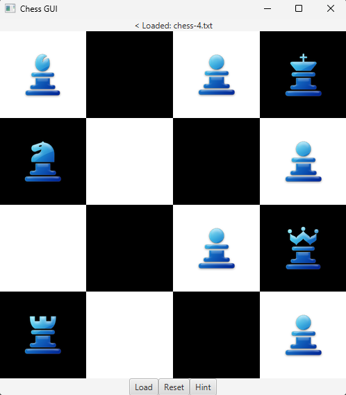
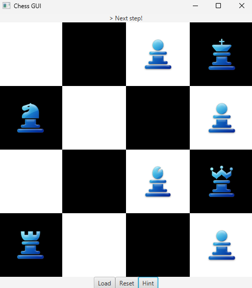
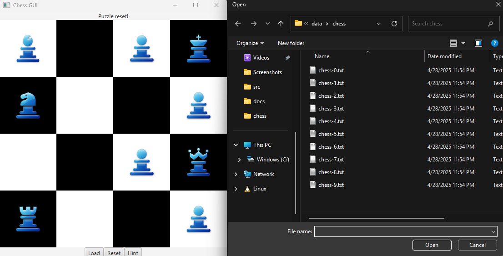
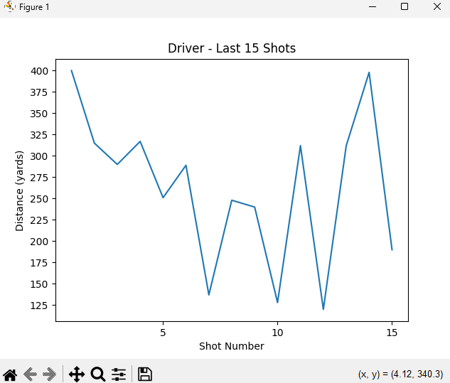

Designing, building, and improving software systems
Seeking Summer 2026 Internship
View My WorkHello! I'm a Computer Science student at Rochester Institute of Technology with a passion for building efficient, scalable software systems. With a strong foundation in object-oriented programming, data structures, and algorithms, I enjoy tackling complex problems and creating solutions that make a real impact. I'm actively seeking a Software Engineering Internship for Summer 2026 where I can apply my skills and continue growing as a developer!
Bachelor's of Science, Computer Science
August 2024 - May 2028 | Rochester, NY
GPA: 3.93/4.00
Relevant Coursework:
A JavaFX puzzle application featuring 9 single-player chess boards.
The goal of each puzzle is to eliminate every piece on the board using
standard chess movement rules until exactly one remains.
The centerpiece of the project is a BFS solver I implemented to traverse
possible board states and determine a valid solution path. This was built
shortly after learning the algorithm, applying it independently to a
multi-piece, stateful problem with branching move trees. When a player
requests a hint, the solver automatically moves the next piece to capture another piece. If no
winning path exists from the current position, the system correctly
identifies it as unsolvable rather than returning a bad hint.
Players can fully reset the board at any point or load a new puzzle from a .txt file in the following format:
6 6
R . . . . R
. B . . B .
. . P P . .
. . P P . .
. B . . B .
R . . . . R
The numbers represent the size of the board (rows, columns) and the letters represent piece types.
R = Rook, B = Bishop, P = Pawn, N= Knight, Q = Queen, K= King, . = Empty Space.
Loading a Chess Board and Requesting a Hint:



Developing a Java desktop application to help 2–10+ roommates track and split shared expenses. Built on a layered OOP architecture with a clear separation between model, persistence, and UI layers. The backend handles automated expense calculations and file-based persistence, restoring application state reliably across sessions. The model layer has 100% JUnit test coverage. Currently building out the JavaFX interface with a dashboard, expense entry panel, and roommate manager — all consolidated in a single window.
A cross-platform CLI tool (Windows, macOS, Linux) for golfers to record,
update, and analyze club distance data. Built in Python with a modular
architecture separating entry point, business logic, and storage concerns.
Distances are automatically persisted to JSON on first run. Matplotlib
visualizations surface per-club averages and historical performance trends,
helping identify patterns over time. Core logic is fully validated with Pytest
across club types and edge case inputs.
RangeLine Trend Visualization After 15+ Shots for a Driver:
